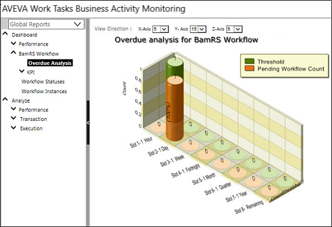
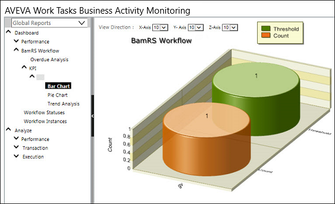

No
The Overdue Analysis Report in the BAM Dashboard is displayed at two levels:
Overdue Analysis
This graphical view shows how the pending workflow count stacks up against the prescribed thresholds in each time slot as defined.

KPI Analysis
The bar chart view shows the KPI against the threshold defined for it.
